bgm：《one more time,one more chance》
十一放假，本来以为要实验室七日游，结果…不用说了吧23333。一号的时候班上的小伙伴叫我一起去附近一个古镇上一日游，没怎么犹豫就答应了，毕竟内心住着一个奔放不羁的野马，开学第一个长假实验室都没人怎么可能静得下来，不如趁此机会出去走走。
一日游我身体出了点小状况，差点闹出笑话，往事不堪回首。不说了，突然想起来之前一直想去的新海诚展还没去，一看截止时间是10月7日，就打算直接去了。在票圈和空间问问有没有人愿意一起去，可以，没人理我。最后和一个哥们一起去的。
那下面就说说我的观后感吧：
实际感受
What the fuck? emmmm…这些人都在拍锤子呢？拍了回去看得懂吗？卧槽好叼，还不错，好牛逼，假装自己看懂了。很良心。
用心感受
这次展览总共分为六个部分，《星之声》，《云之彼端，约定的地方》，《追逐繁星的孩子》，《秒速五厘米》，《言叶之庭》，《你的名字》。每个部分分别包含了每部作品的故事描述，构图设计以及一些复印手稿，当然还有一些其他的修饰之类，总体来说对于内行人员来说可以学到一些东西，对于新海诚忠实粉丝可以拍照拍到内存爆炸。但是对于我这样的伪粉丝来说，我只是在回忆电影的情节以及感受这个新海诚构造的世界的氛围罢了。
我就说说自己很熟悉的后三部吧，关于新海诚式的爱情。
自己第一次接触新海诚的电影是在本科阶段，二次元室友给我推荐的言叶之庭，于是走上了高画质的不归路，动漫低于720p基本不想看。看过秒速五厘米，才知道原来故事可以这么讲，抽取生活的细节进行描绘加以修饰，一次次转身，电车狂魔，任君想象。很简单的情节，配上要命的BGM，感人的画质画风，却能绘出文字难以描述的平凡，最平凡的相遇相爱和错过。感觉自己拙劣的文笔，确实难以复现自己的观感，也就是随性聊聊分享。
《秒速五厘米》
这个作品算是惊艳之作，置顶的是秒五的主题曲，《one more time，one more chance》，加网易云外链没版权，bilibili视频没搞好，就凑合听吧…
明里：”呐，听说是秒速五厘米呢？”
贵树：”en，纳尼？”
明里：”樱花飘落的速度，每秒钟五厘米。”
贵树：”这样啊。”
年少时，同一年龄段的女生大抵会比男生成熟，有些做法和想法男生无法理解，难以捉摸的青春和青春的青涩也大抵如此吧。
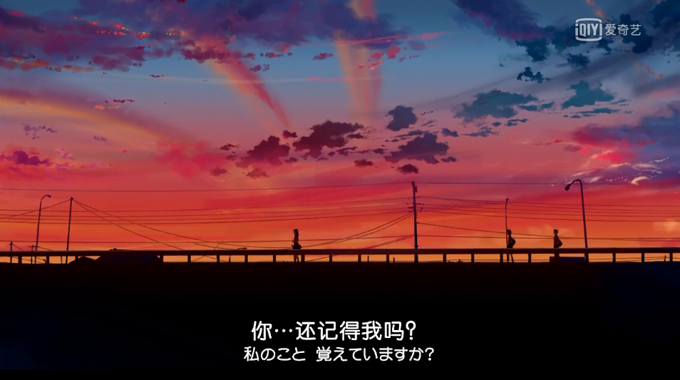
明里对于搬家之时两人的泣不成声并没忘记，却问着你还记得我吗？在感情中主动的那一方的语气可能就是这样略显卑微吧。
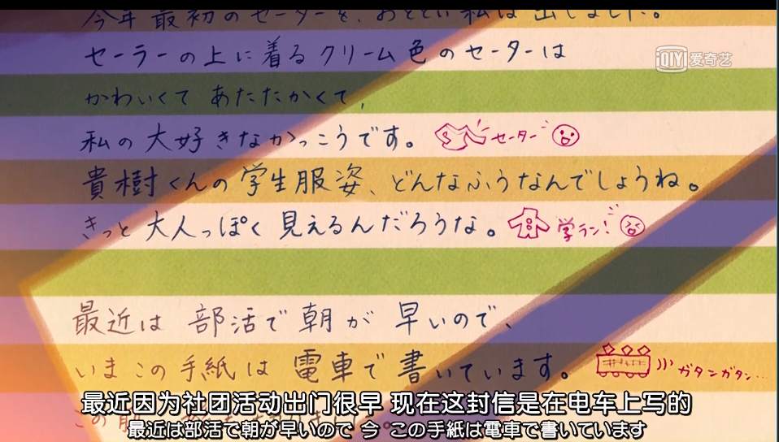
年少时候的书信，这种回忆真的可以说是很特殊了，不管是朋友的问候还是告白的情书，不知道现在天天电子产品的00后有没有写过哈哈哈，反正我写过emmmm，那个时候字估计也是巨丑。
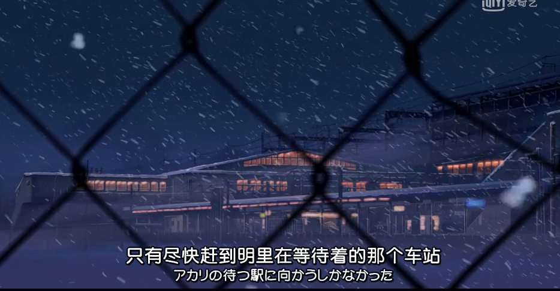
什么都没想的奔着那个人在的地方就去了，几公里？几十公里？几百公里？ 好像没有什么能阻挡那股劲。
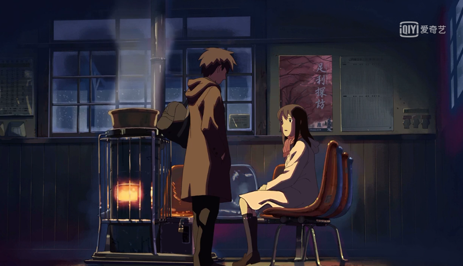
这一幕反正是吃了一万吨狗粮，很感动。嗯，没经历过。
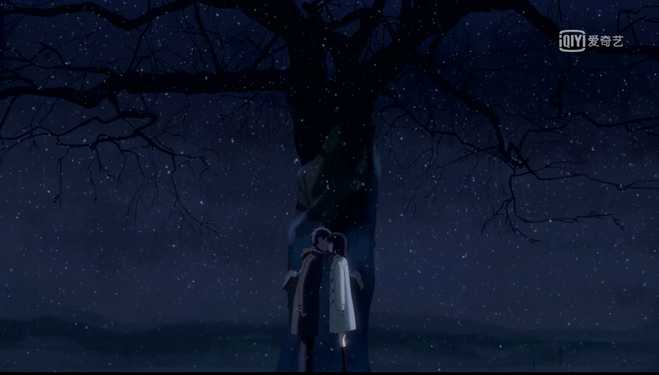
贵树自白：我知道我们这十三年来经历的一切在此刻交融，然后，下一刻却又悲伤的不能自已。因为我不知道该如何珍藏这份温暖，也不知道该将她的灵魂带向何处。横亘在我们面前的是那沉重的人生与漫长的时间，让人望而却步。这束缚着我的不安，最终还是慢慢的消失，剩下的，只有明里那柔软的双唇传来的触感。
早恋，充满青涩、幸福、忌讳，对未来感到惶恐，却又对眼前人爱的深切。矛盾的交织，所以每一次对话每一次拥抱都显得异常的珍贵，如果是一次亲吻，注定会是一生的烙印。
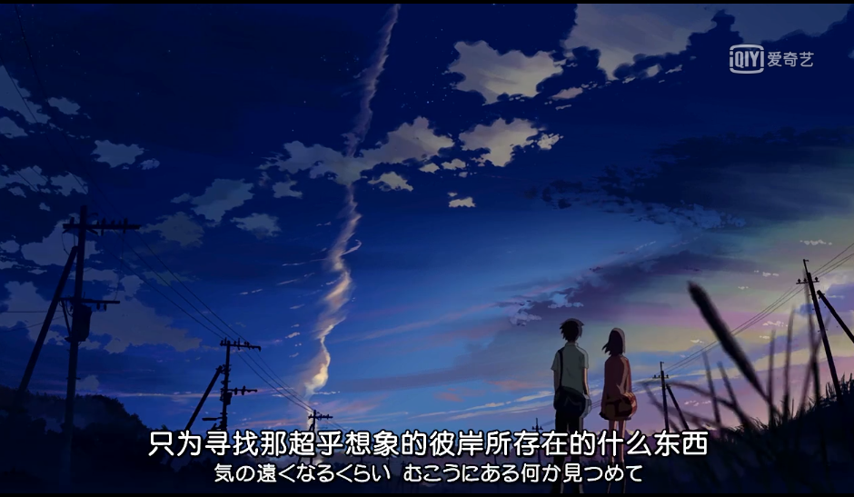
这张图可以说是很令人忧桑而又头大的了,女二的眼中只有男主，男主的眼中只有天空和远处的她。
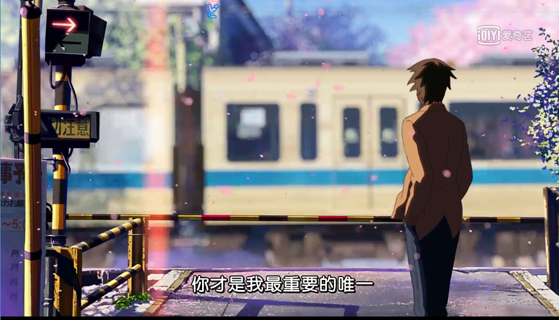
故事不想多讲，part2，part3讲的就是”我的眼里只有你，为何却要入红尘?”
内心ps： cnm互相喜欢能不能不作？
———-华丽的分割线————-
心情不好，不更了，为了写博客重新刷番搞得很难受，看不下去了，有空再写。太垃圾了，6了6了。先附上几张拍的图片吧。
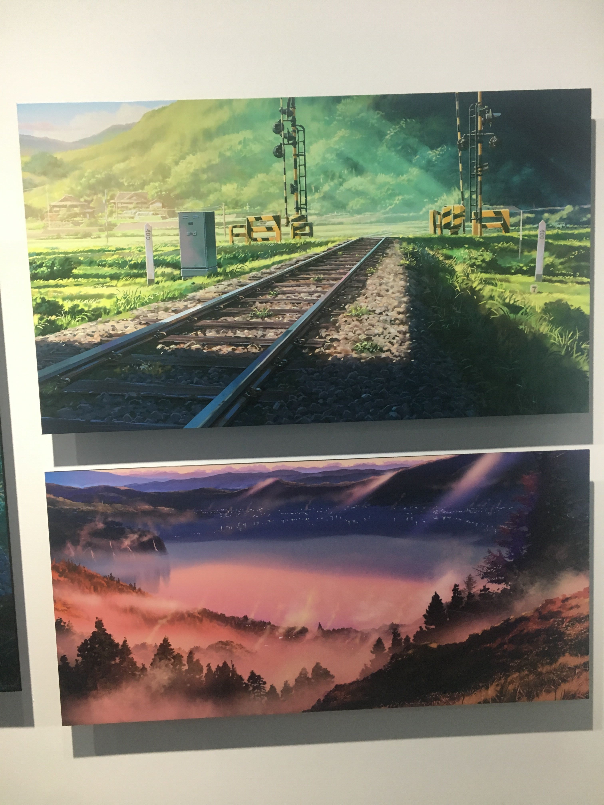
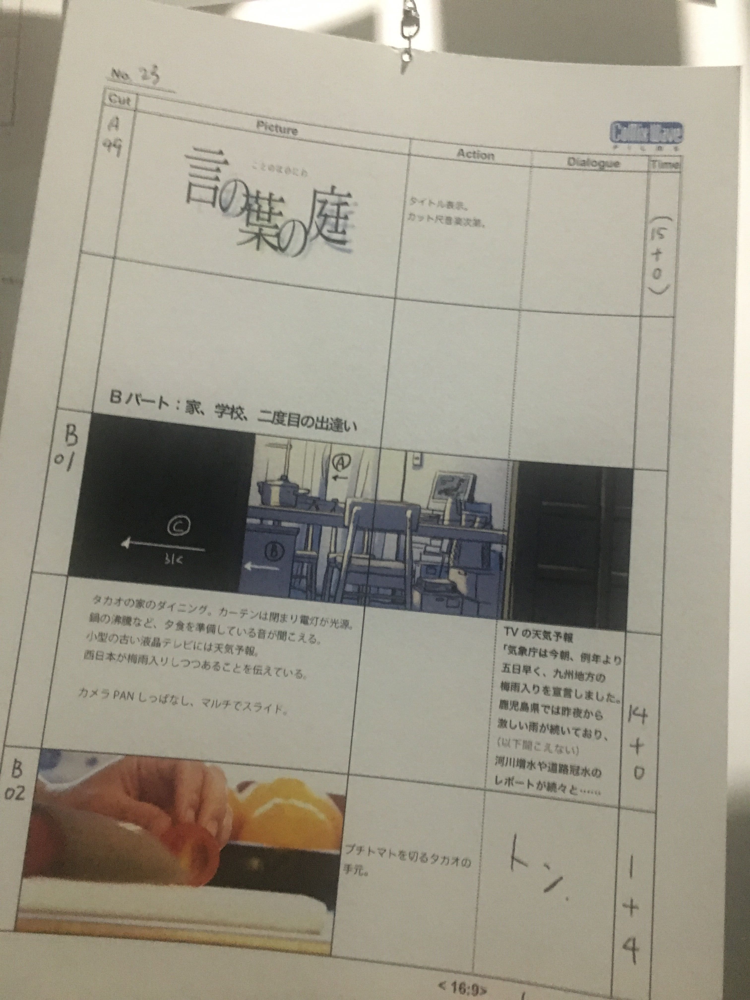
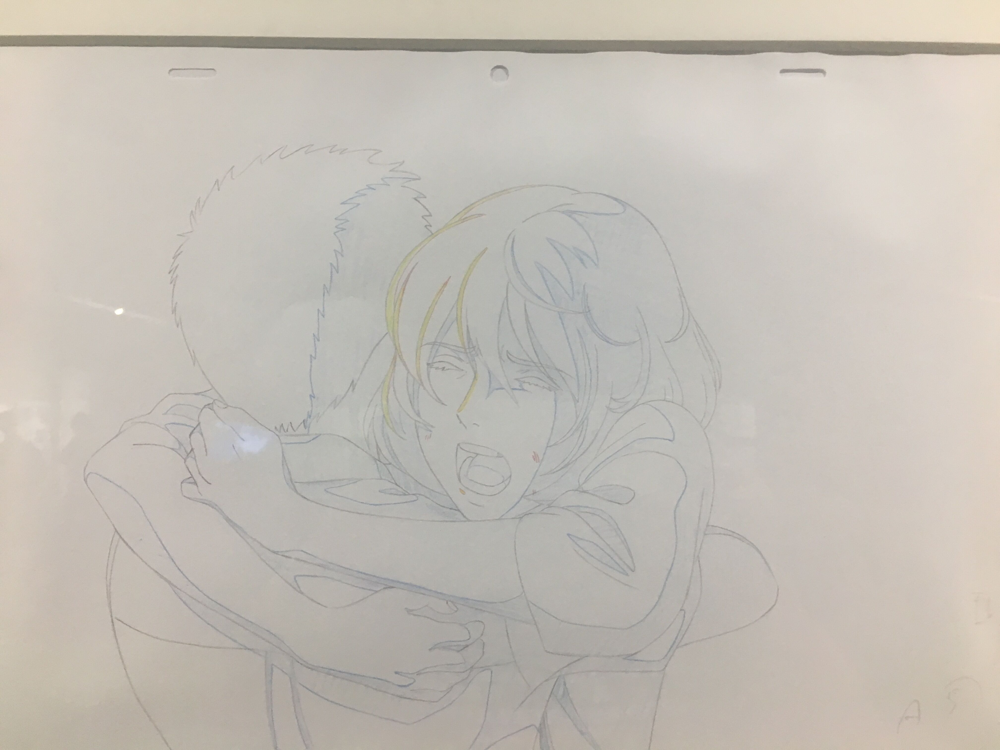
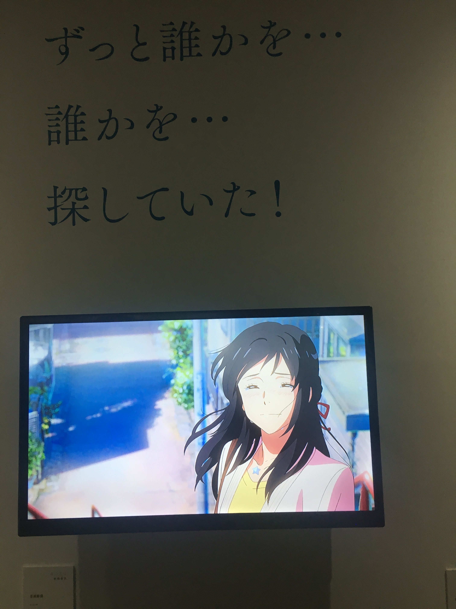
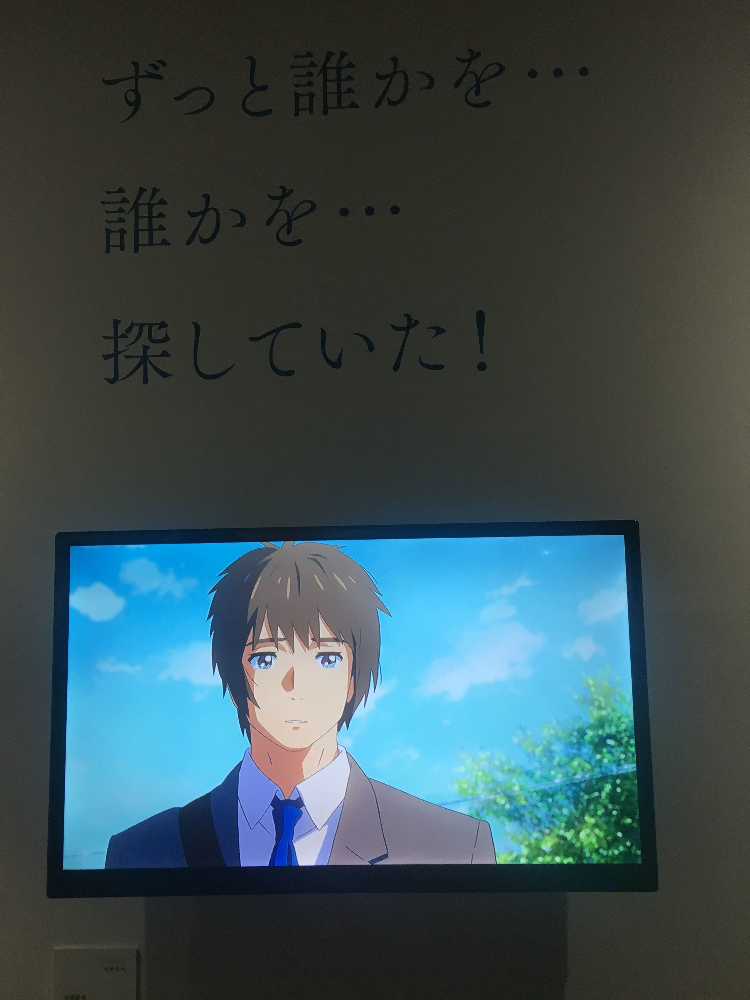